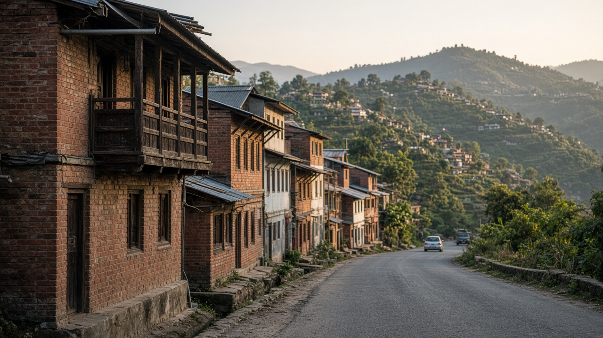
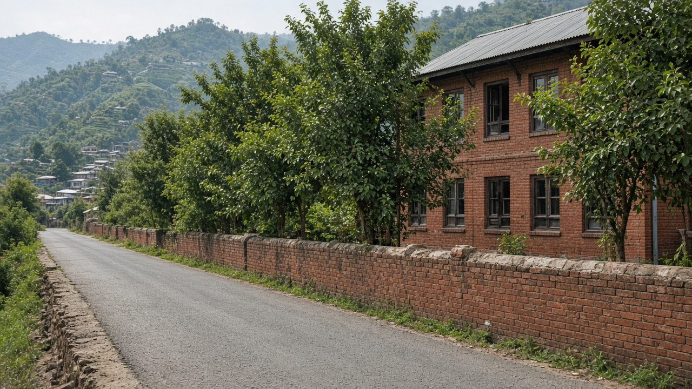
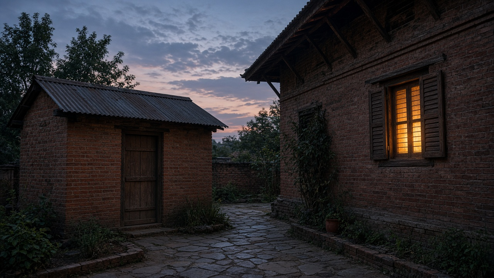

Noise Pollution and Community Health
Published on August 20, 2026

Noise is a physical agent that the body treats as stress even when the ear does not register pain. Traffic, aircraft, construction, generators, loudspeakers, and industrial machinery raise community sound levels that disturb sleep, elevate blood pressure, and impair children's learning. The World Health Organization (WHO) links night-time noise to cardiovascular disease through repeated arousal and stress hormones. Hearing loss from occupational and recreational loud sound is largely irreversible. Unlike a chemical that can be flushed from blood, acoustic energy delivers its dose in the moment, measured in decibels and duration, with night-time and impulsive peaks carrying extra weight.
Equity is sharp: people living beside highways, airports, and unregulated workshops cannot buy quiet, while those who generate the noise often sleep elsewhere. Schools and hospitals need special protection because concentration and healing fail in a roar. Low-frequency rumble from generators and traffic penetrates walls that stop speech frequencies. Community annoyance and mental health effects are real outcomes, not luxuries, and they appear at levels below those that cause classic hearing damage. Mapping sound with calibrated meters, not only complaints, shows where barriers, speed control, or operating-hour limits would cut the largest population dose.
Controls include quieter pavement, vehicle standards, enclosed generators, buffer buildings, and bans on unnecessary night loudspeakers. Workers need hearing protection and rest from continuous noise, not only a bonus for overtime in a loud hall. Municipal rules should treat festivals and construction with time limits rather than open-ended permits. Households can lower volume of personal devices, but they cannot silence a highway; that is a planning and enforcement task. Noise is environmental toxicology without a molecule: the pathway is the ear and the sleep cycle, and the response is measurable disease if the dose is allowed to continue night after night.

ध्वनि त्यस्तो भौतिक कारक हो जसलाई शरीरले कानले पीडा नदर्ताउँदा पनि तनाव मान्छ। यातायात, हवाइजहाज, निर्माण, विद्युत् जनित्र, ध्वनि विस्तारक र औद्योगिक मेसिनले सामुदायिक आवाज स्तर बढाउँछन् जसले निद्रा बिगार्छ, रक्तचाप उठाउँछ र बालबालिकाको सिकाइ कमजोर पार्छ। विश्व स्वास्थ्य संगठन (WHO) रातको ध्वनिलाई दोहोरिने जागरण र तनाव हर्मोनमार्फत हृदय रोगसँग जोड्छ। व्यावसायिक र मनोरञ्जनात्मक चर्को आवाजबाट श्रवण हानि प्रायः उल्ट्याउन सकिँदैन। रगतबाट पखाल्न सकिने रसायनभन्दा फरक, ध्वनिक ऊर्जाले मात्रा त्यही क्षण दिन्छ, डेसिबल र अवधिमा नापिन्छ, रात र आकस्मिक चुलीलाई अतिरिक्त भार दिइन्छ।
न्याय तीखो छ: राजमार्ग, विमानस्थल र अनियमित कार्यशाला छेउ बस्नेले शान्ति किन्न सक्दैनन्, जबकि आवाज निकाल्ने प्रायः अन्यत्र सुत्छन्। विद्यालय र अस्पताललाई विशेष सुरक्षा चाहिन्छ किनकि गर्जनमा एकाग्रता र निको हुने प्रक्रिया असफल हुन्छन्। विद्युत् जनित्र र यातायातको न्यून आवृत्ति गूँजले बोली आवृत्ति रोक्ने भित्ता पनि छिर्छ। सामुदायिक चिढ र मानसिक स्वास्थ्य प्रभाव वास्तविक नतिजा हुन्, विलासिता होइनन्, र परम्परागत श्रवण क्षतिभन्दा कम स्तरमा देखिन्छन्। उजुरी मात्र होइन अंशांकित यन्त्रले आवाज नक्सा गर्दा बार, गति नियन्त्रण वा सञ्चालन घण्टा सीमा कहाँ सबैभन्दा ठूलो जनसंख्या मात्रा काट्छ देखाउँछ।
नियन्त्रणमा शान्त सडक सतह, सवारी मापदण्ड, बन्द विद्युत् जनित्र, मध्यवर्ती भवन, र अनावश्यक रात ध्वनि विस्तारक प्रतिबन्ध पर्छन्। कामदारलाई चर्को हलमा अधिक समयको बोनस मात्र होइन श्रवण सुरक्षा र निरन्तर ध्वनिबाट विश्राम चाहिन्छ। नगर नियमले चाड र निर्माणलाई खुला अनुमति होइन समय सीमासहित व्यवहार गर्नुपर्छ। घरले व्यक्तिगत यन्त्रको आवाज घटाउन सक्छ, तर राजमार्ग चुप पार्न सक्दैन; त्यो योजना र प्रवर्तन कार्य हो। ध्वनि अणुबिनाको वातावरणीय विषविज्ञान हो: मार्ग कान र निद्रा चक्र हो, र मात्रा रातैपिच्छे जारी रहन दिइए प्रतिक्रिया मापनयोग्य रोग हो।

ध्वनि वह भौतिक कारक है जिसे शरीर कान में दर्द न दर्ज होने पर भी तनाव मानता है। यातायात, विमान, निर्माण, विद्युत् जनित्र, ध्वनि विस्तारक और औद्योगिक मशीन सामुदायिक ध्वनि स्तर बढ़ाते हैं जो नींद बिगाड़ते, रक्तचाप उठाते और बच्चों की सीख कमजोर करते हैं। विश्व स्वास्थ्य संगठन (WHO) रात की ध्वनि को दोहरा जागरण और तनाव हार्मोन के माध्यम से हृदय रोग से जोड़ता है। व्यावसायिक और मनोरंजक तेज आवाज से श्रवण हानि प्रायः उलटी नहीं जा सकती। रक्त से धोए जा सकने वाले रसायन से भिन्न, ध्वनिक ऊर्जा मात्रा उसी क्षण देती है, डेसिबल और अवधि में नापी जाती है, रात और आकस्मिक चोटियों को अतिरिक्त भार दिया जाता है।
न्याय तीखा है: राजमार्ग, विमानतल और अनियमित कार्यशाला के पास रहने वाले शांति नहीं खरीद सकते, जबकि शोर उत्पन्न करने वाले प्रायः अन्यत्र सोते हैं। विद्यालय और अस्पताल को विशेष सुरक्षा चाहिए क्योंकि गर्जन में एकाग्रता और उपचार असफल होते हैं। जनित्र और यातायात की निम्न आवृत्ति गूँज बोली आवृत्ति रोकने वाली दीवार भी भेदती है। सामुदायिक चिढ़ और मानसिक स्वास्थ्य प्रभाव वास्तविक परिणाम हैं, विलासिता नहीं, और पारंपरिक श्रवण क्षति से कम स्तर पर दिखते हैं। केवल शिकायत नहीं अंशांकित यंत्र से ध्वनि का नक्शा बताता है कि बाड़, गति नियंत्रण या संचालन घंटे सीमा कहाँ सबसे बड़ी जनसंख्या मात्रा काटेगी।
नियंत्रण में शांत सड़क सतह, वाहन मानक, बंद विद्युत् जनित्र, मध्यवर्ती भवन, और अनावश्यक रात ध्वनि विस्तारक प्रतिबंध शामिल हैं। श्रमिकों को तेज हाल में अधिक समय का बोनस ही नहीं श्रवण सुरक्षा और निरंतर शोर से विश्राम चाहिए। नगर नियम को उत्सव और निर्माण को खुली अनुमति नहीं समय सीमा के साथ व्यवहार करना चाहिए। घर व्यक्तिगत यंत्र की आवाज घटा सकते हैं, पर राजमार्ग चुप नहीं कर सकते; वह योजना और प्रवर्तन कार्य है। ध्वनि अणु के बिना पर्यावरणीय विषविज्ञान है: मार्ग कान और नींद चक्र है, और मात्रा रात-दर-रात जारी रहने दी जाए तो प्रतिक्रिया मापने योग्य रोग है।